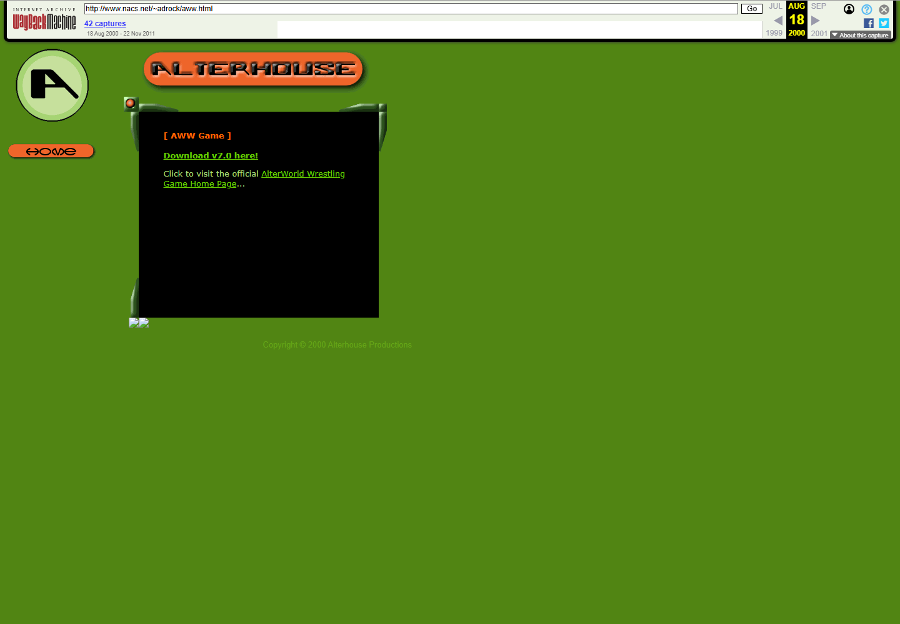

Simulated matches
Real-time bouts driven by strategic move selection and scrolling match commentary.
FREEWARE · WINDOWS · 1999—2002
I was Jason “Jay” Jones, an aspiring developer with a wrestling obsession and an unusual weapon of choice: Microsoft Visual FoxPro.
I began building AlterWorld Wrestling around 1999. Visual FoxPro was an odd choice for a wrestling simulator, but it was also surprisingly capable—and I kept finding new things to make it do.
The earliest version had one screen and predetermined one-on-one matches. There was no grand architecture and no roadmap to version 8.6. There was just the next feature, then another, and eventually a freeware game much larger than the little experiment I had started.
Players did not directly steer a wrestler around a ring. They made strategic move choices while the match played out through scrolling commentary. That design let the game feel part simulator, part booking sandbox, and part text-driven wrestling broadcast.
Real-time bouts driven by strategic move selection and scrolling match commentary.
Exhibition, career, and tag-team modes alongside created wrestlers and teams.
More than 40 wrestlers, imported photographs, finishing moves, and improved computer opponents.
Editable and custom moves plus tools for building wrestlers and teams.
An e-fed manager, Franchise Manager, and 35 missions by version 8.5.
A built-in bowling game that began as an experiment to see what else Visual FoxPro could do.
Franchise Manager let players hire and train wrestlers, set ticket prices, advertise, stage events, and manage money. The long-term objective was wonderfully modest: make enough money to buy out the WWF.
It turned AWW into more than a match simulator. You were managing the roster, the show, and the business—usually while I was thinking of one more system to add.
One screen, predetermined one-on-one matches, and the start of a very long feature list.
A surviving original download page explicitly identifies this build as v7.0.
The download page listed the Microsoft Visual FoxPro runtime libraries as included.
Roughly 5–10 more wrestlers, updated pictures, a redesigned interface, finishing moves, Franchise Manager, and internal code improvements.
A new release documented on the archived project site.
The next public release, announced alongside an invitation to send bug reports.
Added 35 missions and smarter computer-controlled opponents.
The Anniversary Edition. Later that October, more Franchise Mode work was underway, including a player-versus-computer roster draft.

There were no app-store dashboards. I posted executables, wrote update notes, asked for bug reports, and hoped the right people found the page.
Looking back, the missing images and broken links are part of the record too. The Wayback Machine did not preserve everything—but it preserved enough to reconstruct the releases, the feedback, and the fact that people came back.
Open the original 2000 page ↗For a small freeware developer in 1999–2002, download counts and player behavior were mostly invisible. There were no analytics dashboards, social feeds, star counts, or automatic reviews waiting after every release.
Archived comments show real players rating AWW, comparing it with PWARS and EWARS/EW9000, praising its graphics and layout, anticipating releases, and reporting bugs—including one wonderfully specific complaint that the “holey match” was not working.
The evidence does not justify pretending there was a huge community. It does show something better than a guess: repeat visitors, feature requests, bug reports, comparisons with competing wrestling simulators, and people waiting for the next version.
If the embed is unavailable, watch the gameplay-preservation video on YouTube ↗. There is also a broader wrestling-game retrospective ↗.
| Capture | Apparent version | Original size | SHA-1 | Archive |
|---|---|---|---|---|
| August 18, 2000 | v7.0 | 4,486,573 bytes | 818921be5be67cd42fe9439d070e427bd70dd291 | Archived installer ↗ |
| October 27, 2001 | v8-era build; exact minor version unconfirmed | 5,500,088 bytes | 0ff7eb49a5060fc66b1a8b1fa8956b806ec45231 | Archived installer ↗ |
| August 2, 2002 | v8.6; server file dated May 21, 2002 | 5,811,941 bytes | a84a275de2aa992fcf7a9b6b46945377559c6848 | Archived installer ↗ |
Historical executables: Preserve these files unchanged and verify their hashes. Scan them before analysis, and use an isolated legacy-Windows virtual machine rather than running them directly on a modern everyday computer.
Identity note: a MobyGames credit appears to combine two different people named Jason Jones. I had no involvement with the unrelated 2024 game Concord.
Screen design, programming, research, development, alpha testing, and technical work.
Technical expertise.
The players who sent emails, bug reports, ideas, and feedback.
LOOKING BACK
I built AlterWorld Wrestling before social media, analytics dashboards, app stores, GitHub stars, or easy feedback loops. Finding the archived comments, videos, catalog entries, and surviving installers more than twenty years later proves that the game reached people. For a freeware wrestling simulator written in Visual FoxPro, that is a pretty satisfying legacy.